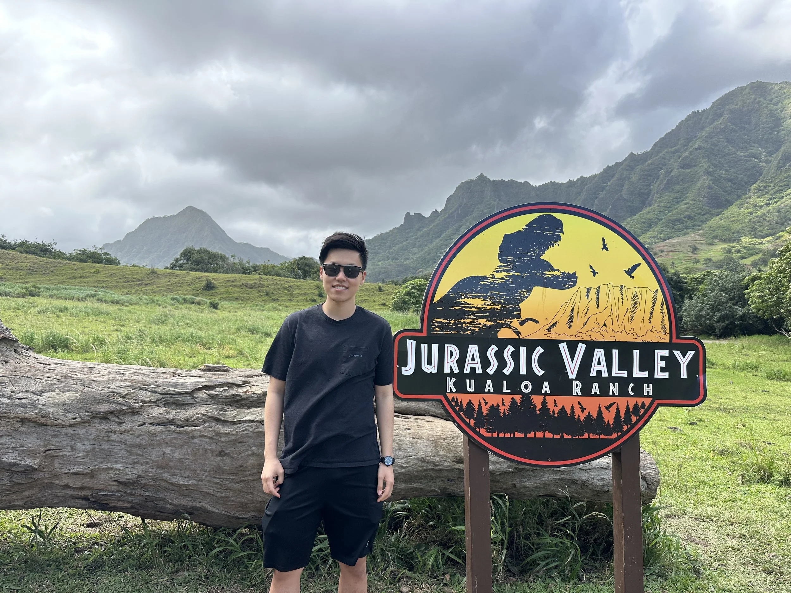

Undergraduate researcher working in speech processing and the mathematics of computation. Drawn to problems where signal meets meaning. ✌️

I'm Zhuoyan Tao — Terry to friends and colleagues. I study Computer Science and Mathematics at USC, with research spanning spoken language understanding, multilingual speech, and audio generation.
My work sits at the boundary of signal processing, machine learning, and linguistics — I'm drawn to the question of how meaning is carried in speech beyond just words.
In August 2026, I'll be joining CMU's Master of Intelligent Information Systems program in the School of Computer Science and Language Technologies Institute. Outside of research, I enjoy exploring new places ☀️